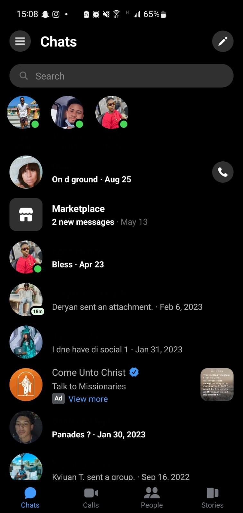
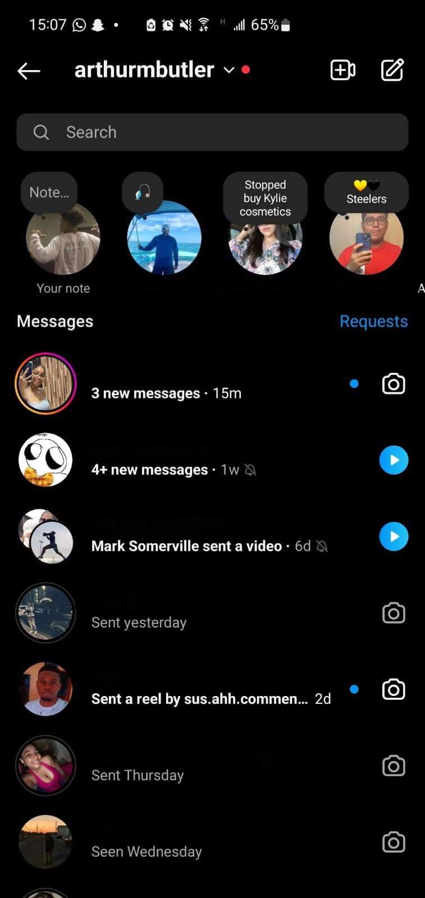
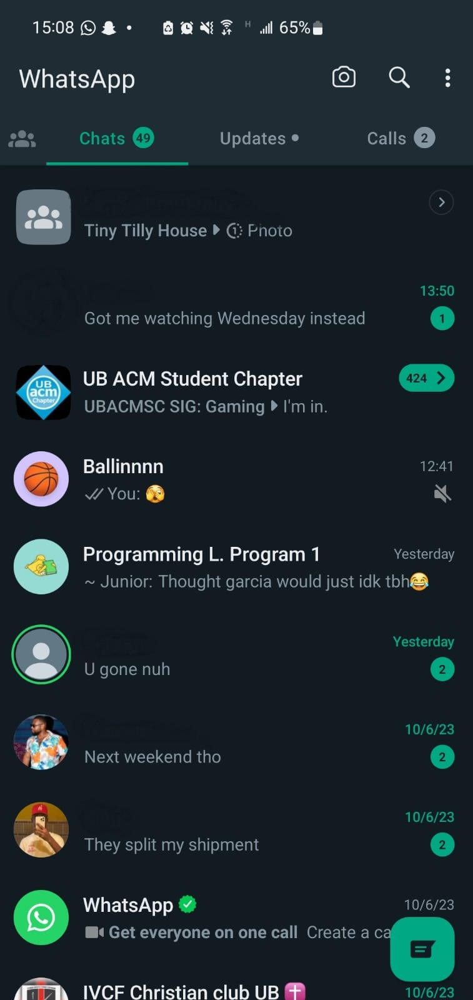
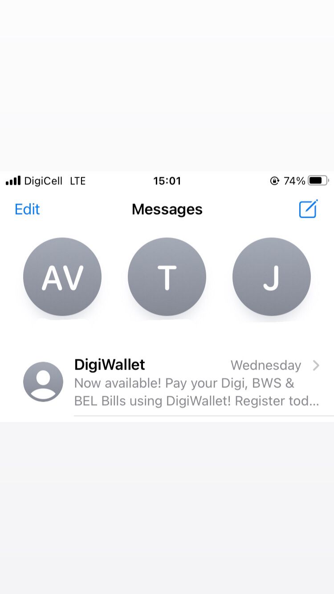

Evaluating Instant Messaging UIs
For this exercise, we were given the task of evaluating Instant Messaging UIs. The UIs being evaluated are: Facebook Messenger, Instagram DMs, Whatsapp, and iMessage.
Facebook Messenger
 Facebook Messenger: This messaging app was indeed confusing when I first used it, but being that I was already familiar with other messaging apps, it became easier to learn. The design and set up makes it easy for users to type a new message to someone else. They just need to search for the person's name or tap on an existing chat. It can be noted that on Android phones, chat heads appear when a new message is received, which then makes it even easier for people to chat with friends and therefore increases the usability. When it comes to error recovery, Messenger has developed an unsend feature for wrong messages. All in all, Messenger is fairly user-friendly and adequately designed as a result of the various colors being used along with the setup.
Instagram DMs
 Instagram DMs: Similarly to the Facebook Messenger icon, Instagram has an icon that looks like Messenger that users can tap to get to their direct messages. Above their messages, they're able to use tabs to access their calls as well as message requests if their Instagram account is private. I believe that this is one of the easiest messaging apps to learn. Everything is easily accessible even with the new updates. Instagram also allows for messages to be unsent, making errors easily recoverable. Instagram is fast and efficient when it comes to receiving and sending messages, and becomes even faster when a user has learned the app.
WhatsApp Messenger
 WhatsApp Messenger: WhatsApp is easily my favorite instant messaging UI, and it is one of the most widely used apps in the world today. It is efficient and easy to learn as a result of the different features that allow others along with myself to feel confident and comfortable using the app. Upon opening the app, the user is presented with the Statuses along with tabs to easily access calls, camera, chats, and settings. In addition to this, it is easy to create groups and start new messages, delete messages and add contacts. It is certain that WhatsApp is structured and one of the most reliable apps today.
iMessage
 iMessage: iMessage deserves second place in my book. It's easy to learn and use, efficient, and simple. Its design is minimalistic and straight to the point. There's the search bar to easily find someone to message or to find a specific message. There's also the message button to start a new message thread. The colors of the chat bubbles also make it even easier to differentiate between the user's message and the incoming message. In addition to this, it is convenient as it typically sends messages via Wi-Fi; however, if there isn't any Wi-Fi, an iPhone user can rely on the app sending the message as a text. With the new update as well, a user can now unsend messages making errors easily recoverable. It is certainly one of the most ideal messaging apps by far.